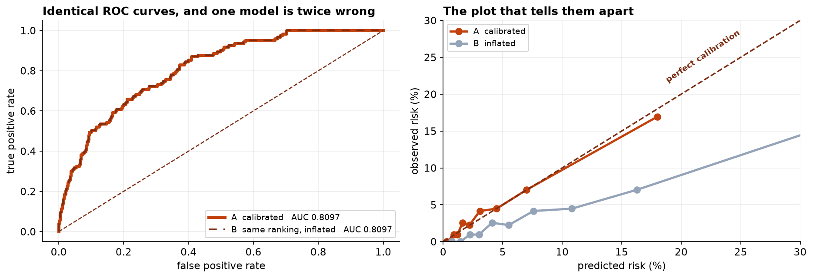
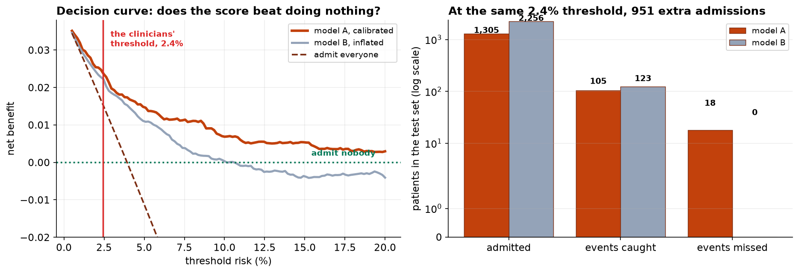

A logistic regression that ranks patients well is not the same thing as one that can be trusted to set a threshold. This chapter is about the gap between those two claims, and about the metric that cannot tell them apart.
- Setting
- An emergency department: 8,938 presentations with chest pain, each with age, sex, vital signs, troponin, comorbidities and ECG findings, and whether a major cardiac event followed within 30 days.
- The question
- Which patients can safely be discharged, and which should be admitted for observation?
- Why it matters
- The score is not a research output. It is a rule that sends people home, so it has to be right about how much risk a patient carries and not merely about which patient carries more.
- What we do
- Fit the model on a training set and evaluate only on held-out data, report AUC because everyone asks for it, then build a second model with the same AUC and half the accuracy about risk, measure calibration properly, derive the threshold from a stated cost ratio rather than from the data, and check the whole thing with decision curve analysis.
Two models, AUC 0.8097 both, identical to four decimals. One predicts a mean risk of 3.93 percent against an observed 3.93 percent. The other predicts 8.64 percent. At the clinicians' own threshold the second admits 951 more patients to catch 18 more events, which is 53 admissions each against a stated tolerance of 40.
The Decision the Score Is For
A patient scoring above the threshold is admitted for observation. Below it they go home with advice. Everything about how this model should be built and judged follows from that sentence, and almost none of it follows from the usual machine-learning defaults.
| The default | Why it fails here |
|---|---|
| Report accuracy | The event rate is 3.9 percent. Sending everybody home scores 96.1 percent |
| Report AUC | Answers a question about ranking. The decision needs the level |
| Pick the threshold from the ROC curve | Youden's index encodes a cost ratio of 1:1, silently, and nobody agreed to that |
| Drop rows with missing predictors | A troponin assay that was not ordered is informative about how the patient presented |
| Evaluate on the training set | A variable with no real effect improves training performance every single time |
After removing a duplicated extract, 35 blood pressures of zero from a cuff fault and 28 heart rates of 999 from a monitor sentinel, 8,938 presentations remain. The 138 patients with no troponin result are kept, with an indicator, because dropping them would quietly restrict the score to patients somebody already thought were worth testing.
Two Models, One AUC
Fit the model on 5,809 patients and hold back 3,129. Then build a second model that ranks every patient in exactly the same order and is wrong about the level, by adding a constant to the log-odds. That operation cannot change any patient's position in the queue.
| Model | AUC | Brier | Mean predicted risk | Observed |
|---|---|---|---|---|
| A, calibrated | 0.8097 | 0.03448 | 3.93% | 3.93% |
| B, same ranking, inflated | 0.8097 | 0.03944 | 8.64% | 3.93% |
The AUCs are identical to four decimal places, and they should be. AUC asks exactly one question: given a patient who had an event and one who did not, how often does the model score the first one higher? That is a question about order. Model B is wrong about the level by more than a factor of two, and the metric quoted in every paper and every model card cannot detect it.
The Brier score does notice, because it scores the probabilities rather than the ranking. It does not say where the problem is, which is what the next section is for.

Calibration, Measured Rather Than Eyeballed
Regressing the outcome on the predicted log-odds gives two numbers. The slope says whether the spread of predicted risks is right. The intercept says whether the level is.
Both models have a slope of 0.98, and that is the point. Model B inherited model A's spread exactly, so the slope cannot distinguish them either. Only the intercept notices. A model card reporting AUC and calibration slope, which is a common pairing, would pass model B without comment.
Model A's decile table is what a well-calibrated score looks like: 0.88 percent predicted against 0.96 observed, 3.08 against 4.15, 7.01 against 7.03, 17.99 against 16.93. The numbers mean what they say.
The Threshold Comes From Costs
A threshold is a statement about how much worse one error is than the other, and that ratio belongs to the clinicians. Here they judge a missed event 40 times worse than an unnecessary night of observation, which fixes the threshold at 1/(1+40) = 2.4 percent. The arithmetic is one line; the judgment behind it is not a statistical question at all.
| At a 2.4% threshold | Admitted | Events caught | Events missed | Admit rate |
|---|---|---|---|---|
| Model A, calibrated | 1,305 | 105 | 18 | 41.7% |
| Model B, inflated | 2,256 | 123 | 0 | 72.1% |
Model B misses nothing, and that is not the good news it appears to be. It buys those eighteen events at 951 extra admissions, or 53 each. The clinicians said 40. A miscalibrated model does not become more cautious; it silently applies a different threshold than the one the clinical team chose, and nobody in the room knows the trade-off has been changed.
It does not look like error. It does not produce worse rankings, worse AUC, or a model that obviously fails. It produces a rule that quietly implements a different decision from the one it was asked to implement, while every metric on the dashboard stays green. That is why calibration belongs next to discrimination in every report, and not in an appendix.
Decision Curve Analysis
The threshold above rests on one cost ratio, and reasonable clinicians will disagree about it. Net benefit evaluates across the whole range, putting true and false positives on one scale using the threshold itself as the exchange rate, and comparing any rule against the two strategies it must beat: admit everyone, and admit nobody.
| Threshold | Model A | Model B | Admit everyone | Admit nobody |
|---|---|---|---|---|
| 1.0% | 0.0319 | 0.0305 | 0.0296 | 0 |
| 2.4% (chosen) | 0.0240 | 0.0223 | 0.0153 | 0 |
| 4.0% | 0.0174 | 0.0148 | −0.0007 | 0 |
| 10.0% | 0.0069 | 0.0003 | −0.0674 | 0 |
| 15.0% | 0.0053 | −0.0037 | −0.1302 | 0 |
Model A is better at every threshold anybody would choose, and the gap widens as the threshold rises. Two other things are worth reading off this table. Admitting everyone becomes worse than doing nothing above about a 4 percent threshold. And model B goes negative at 15 percent, meaning that at that cost ratio a clinician would do better ignoring it entirely.

The Decoy, and Why Held-Out Data Is Not Optional
The dataset carries a variable with no effect whatsoever: the month the patient arrived. Adding it to the model is a test of the evaluation rather than of the model.
On held-out data a useless variable contributes nothing, and here it costs a little. On the training set it would have looked like a small improvement, every time, because a model with one more free parameter always fits the data it was fitted to slightly better. That is the whole argument for a test set, and it is why C3 of the analysis plan was written before anything was fitted.
What to Watch
- ✓Report calibration next to discrimination, always. AUC answers a question about ranking and gets quoted as though it answered a question about risk. Two models here differ by a factor of two in predicted risk and by nothing at all in AUC.
- ✓The calibration slope is not enough either. Both models scored 0.98. Only the intercept caught it, and a report giving AUC and slope would have passed the broken model.
- ✓A threshold is a clinical decision. Youden's index and the elbow of the ROC curve both encode a cost ratio, silently, and neither asked anyone what it should be.
- ✓A miscalibrated model overrides the clinical team without telling them. Model B does not look reckless or broken. It looks careful, and it is applying a threshold nobody chose.
- ✓Never quote accuracy on an imbalanced outcome. Sending everybody home scores 96.1 percent here and misses all 123 events.
- ✓A risk score is not a diagnosis. It estimates a rate among similar patients. No individual has a 4 percent event, and the score belongs alongside clinical judgment rather than in place of it.
- ✓Check who the model works for. One AUC and one calibration curve describe the whole cohort. A score well calibrated on average can be badly calibrated for a subgroup the average conceals, which Capstone 33 takes up directly.
Calibration in Data Science & AI
| Where it appears | The same failure, in a different costume |
|---|---|
| Gradient boosting and random forests | Both are systematically miscalibrated out of the box, and both report excellent AUC while doing it |
| Any model trained with class weights or resampling | Rebalancing fixes the ranking and destroys the level, which is fine until somebody reads the probability |
| Credit scoring and pricing | The predicted probability is multiplied by an amount of money, so a calibration error becomes a pricing error directly |
| Neural network confidence | Modern deep networks are famously overconfident, which is why temperature scaling exists |
| Language model probabilities | A stated confidence that does not match the observed rate of being right is the same defect, in a setting where it is much harder to measure |
The Brier score dates from 1950 and weather forecasting, which is the field that took calibration seriously first and for the obvious reason: a forecast of rain is consumed as a number. Cox's 1958 calibration regression is the slope-and-intercept decomposition used here. Vickers and Elkin introduced decision curve analysis in 2006 precisely because discrimination metrics could not answer whether a model was worth using. On the repair side, Platt scaling and isotonic regression recalibrate an existing model's outputs, and temperature scaling is the one-parameter version now standard for neural networks. All three fix the level while leaving the ranking, and therefore the AUC, exactly where it was.
The full project, step by step
The companion notebook reads the plan before fitting anything, cleans the extract and keeps the patients with no troponin result, holds out 3,129 presentations, constructs the second model with identical ordering, measures calibration by slope and intercept and by decile, shows what accuracy would have said, derives the threshold from a stated cost ratio, computes net benefit across the range clinicians disagree over, and finishes with a decoy variable that earns nothing on held-out data.
The dataset
(capstone-clinical-risk-scoring.xlsx) holds 9,060 emergency presentations with a duplicated
extract, cuff faults, monitor sentinels and missing assays left in, a decoy variable that predicts nothing,
the analysis plan agreed with the clinical lead before modeling, and the generating coefficients. Two written
reports accompany it: a plain-language brief for the clinical lead, and a
technical report covering discrimination, calibration and net benefit.
🎓 Key Takeaways
- ✓AUC reads order, decisions read level. Two models with AUC 0.8097 differed by a factor of two in predicted risk.
- ✓The calibration slope missed it too. Both scored 0.980; only the intercept, −0.983 against 0, caught the fault.
- ✓Thresholds come from costs. A 40:1 cost ratio fixes the threshold at 2.4 percent, and no statistical criterion can supply that ratio.
- ✓Miscalibration looks like caution. Model B missed zero events by admitting 951 extra patients, 53 per event against a stated tolerance of 40.
- ✓Accuracy is meaningless at a 3.9 percent event rate. Sending everybody home scores 96.1 percent.